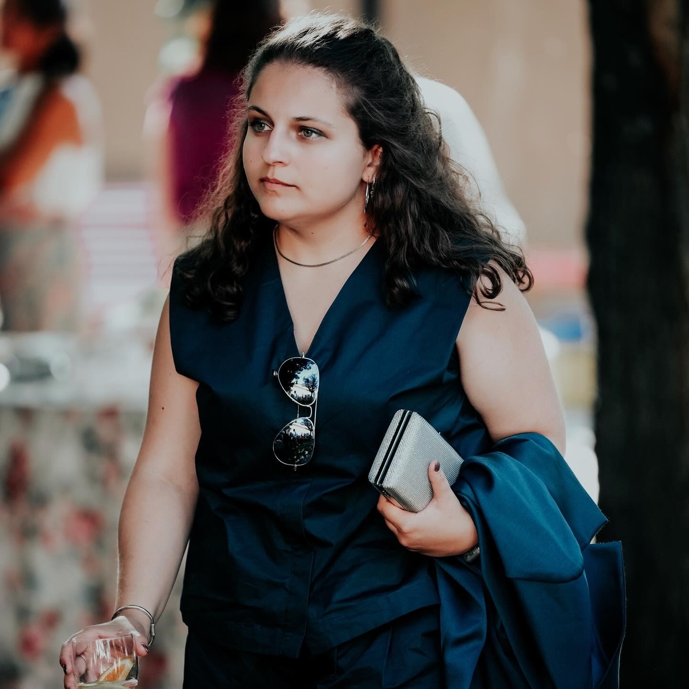

About Me
My journey in physics & beyond

Navigating Uncertainties
I grew up in the Lisbon suburbs, always excited by learning — whether in sports, languages, music, or sciences. Teachers often said I would struggle to choose just one path, and true to form, I embraced the challenge by pursuing STEM in high school, despite a natural proclivity for languages and the humanities.
To the US… and back again.
Discovering astrophysics midway through high school was transformative. Driven to expand my horizons, I participated in the Fulbright/EducationUSA Competitive College Club program, in partnership with the Luso-American Foundation for Development, earning admission and a Presidential scholarship to Hofstra University's Honors College Class of 2021 in New York. Despite academic success there, practical financial realities brought me back to Portugal and led me to Técnico Lisboa, Portugal's leading STEM institute.
Returning to Portugal brought new opportunities, but also significant personal challenges. My journey has been shaped by struggles with physical and mental health, grief, and the ongoing search for self-knowledge and academic direction. Navigating these obstacles has taught me resilience and helped me clarify my true interests, both in science and beyond.
I am now wrapping up my BSc and MS in Engineering Physics simultaneously. I have focused my degree in nuclear and radiation physics with applications to health sciences, and am currently embarking on my MS thesis, which applies network analysis to the history of science. I am particulary keen on investigating the diffusion of scientific knowledge in the early radioactivity community, and the role of women in a traditionally male-dominated field. I am also deeply interested in the history of science more broadly, and in the ways in which scientific knowledge is produced, disseminated, and preserved across time and space.
Beyond the Lab
Outside of academia, I have a passion for reading, embroidery, music, and plants. I spend a perhaps unreasonable amount of time thinking about medieval manuscripts and people who died centuries ago, and I have a soft spot for libraries, archives, and all things old and dusty.
Academic & Professional Path
BSc & MS in Engineering Physics
Instituto Superior Técnico, Universidade de Lisboa
Specialising in nuclear and radiation physics, with applications to health sciences. Currently completing both degrees simultaneously, with MS
thesis on knowledge diffusion in the radioactivity community pending approval.
Honors College — Presidential Scholar
Hofstra University, New York
Admitted on a Presidential scholarship via the Fulbright/EducationUSA Competitive
College Club program, in partnership with the Luso-American Foundation for
Development. Returned to Portugal due to financial constraints.
Science & Technology — High School
Pursued STEM despite equal pull towards languages and humanities. Discovery of astrophysics proved transformative and set the course for everything that followed.
Skills & Expertise
Programming
Software & Lab
Research
Languages
Autodidacta
Self-directed explorations
Soft Skills
"The most beautiful thing we can experience is the mysterious. It is the source of all true art and science."
— Albert Einstein